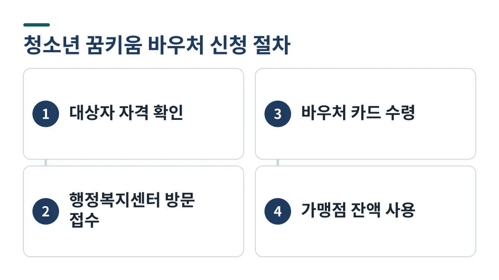
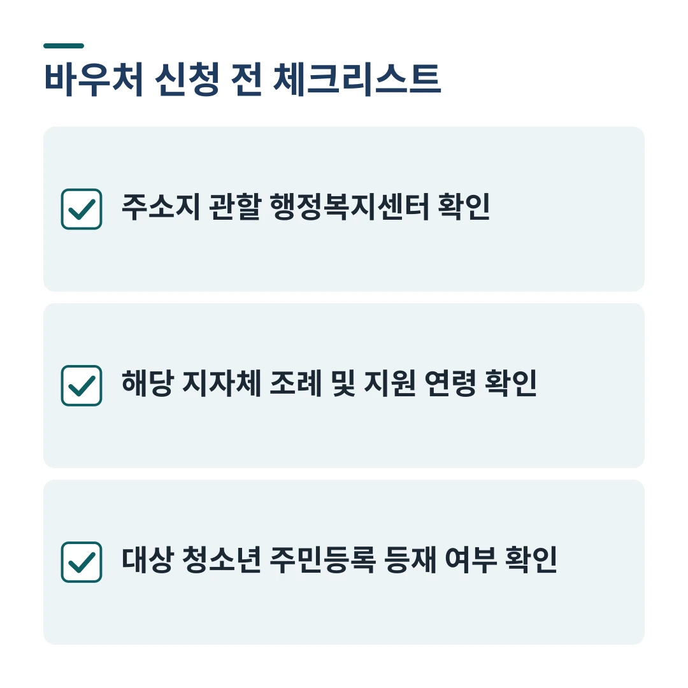

지방자치단체별로 시행하는 청소년 꿈키움 바우처 사업은 지역 내 청소년의 복지 향상과 자립 지원을 위해 전용 충전 카드를 지급하는 제도입니다. 지원 금액이나 대상 나이, 사용 한도는 거주하는 지자체의 조례에 따라 다르게 적용되며 주소지 읍·면·동 행정복지센터에서 신청받고 있습니다. 본인이 해당하는 지역의 공고를 먼저 조회해 보아야 정확한 혜택을 파악하기 좋습니다.

기본적으로 해당 지자체에 주민등록을 둔 청소년이 대상이 되며, 복지 혜택 안내 사이트인 복지로나 정부24를 통해 개별 지자체 사업 공고를 찾아볼 수 있습니다. 지원받은 금액은 지역 내 문화, 체육, 학원, 생활 밀착형 가맹점에서 포인트를 차감하는 방식으로 사용하게 됩니다.
청소년 꿈키움 바우처를 신청하려면 가장 먼저 주소지 관할 지자체의 조례와 공고를 찾아봐야 합니다. 일괄적인 중앙정부 사업이 아니기 때문에 지자체마다 대상으로 삼는 연령대와 지급액 수준이 크게 차이 납니다.
예를 들어 강원 평창군의 경우 관내 13세부터 18세 청소년에게 월 2만 원 상당의 바우처를 지원하는 방식을 취하고 있습니다. 경남 거창군의 구체적인 지원 금액과 연령 기준은 거창군청 고시 공고에서 확인할 수 있습니다. 충북 보은군의 경우 8세부터 12세까지는 연간 10만 원, 13세부터 18세까지는 연간 30만 원으로 차등 설정해 놓았습니다.
이렇게 동일한 이름의 사업이라 하더라도 지역 거주 여부에 따라 수령 금액과 지원 나이가 완전히 다릅니다. 본인의 주민등록 주소지 시·군·구청 홈페이지 고시 공고란에서 올해 기준 정확한 대상을 조회하는 과정이 필수적입니다.
대상 자격을 확인했다면 주소지 관할 읍·면·동 행정복지센터(주민센터) 방문을 통해 신청서를 작성해야 합니다. 보통 신규 대상자가 되는 나이에 도달하거나 타 지자체에서 해당 지역으로 전입해 왔을 때 신청 기회가 주어집니다.
신청 시에는 기본적으로 신청인 신분증과 대상 청소년의 인적 사항을 확인할 서류가 쓰입니다. 부모나 보호자가 대신 접수할 때 구체적으로 제출해야 하는 증빙 문서나 위임 서식은 지자체마다 운영 규칙이 다릅니다. 서류 미비로 다시 방문하는 불편을 피하려면 출발 전 관할 행정복지센터 복지 담당 부서에 제출 서류 목록을 미리 물어보고 챙기는 것이 안전합니다.
기존에 바우처 카드를 발급받아 이용하던 대상자는 연도가 바뀌어도 별도 신청 없이 기존 카드로 잔액이 자동 충전되는 경우가 많습니다. 다만 전출이나 나이 초과 등의 사유가 발생하면 자동 정지될 수 있습니다.

바우처 카드가 수령 완료되면 등록된 가맹점에서 체크카드나 선불카드처럼 사용할 수 있습니다. 서점, 독서실, 미용실, 안경점, 문구점, 체육시설 등 청소년의 성장에 도움이 되는 업종들이 주요 가맹점에 속합니다.
다만 식음료나 단순 오락 업종에 지원금이 쏠리는 현상을 막기 위해 지자체별 가맹점 정책에 따라 업종별 사용 제한 비율을 두고 있습니다. 평창군의 경우 카페나 편의점에서 쓰는 금액을 전체 바우처 지원금의 40% 이내로 제한하는 규정을 두고 있습니다. 경남 고성군의 먹거리 가맹점 이용 한도 비율은 고성군청 공고문에서 확인하세요. 보은군처럼 특정 연령대는 서점 이용 시 제한을 두지 않고 기타 가맹점 사용률을 제한하는 방식을 쓰기도 합니다.
가맹점 등록 여부와 본인의 남아있는 충전 잔액은 각 지자체가 제공하는 바우처 전용 홈페이지에서 조회해 보면 편합니다. 결제 시 제한 비율을 넘기면 결제가 승인되지 않으므로 방문 전에 업종 구성을 짚어보는 습관이 유용합니다.
꿈키움 바우처 외에도 청소년이 챙길 수 있는 공공 지원 제도는 다채롭게 열려 있습니다. 대표적으로 저소득층 및 취약계층 청소년의 스포츠 활동을 돕는 스포츠 바우처 신청 제도가 존재합니다.
스포츠 바우처는 매월 일정 금액 범위에서 체육관이나 학원 수강료를 지원하는 방식으로 진행되며, 꿈키움 바우처와는 지원 목적 및 소득 기준에서 차이를 보입니다. 본인이 지자체 꿈키움 바우처 대상자이면서 동시에 체육 관련 혜택을 더 늘리고 싶다면 두 제도의 자격 요건을 각각 대조해 보는 편이 이롭습니다.
이러한 지자체 복지 바우처 혜택은 매년 예산과 세부 조건이 변경되므로 신청 시점에 나온 안내문을 다시 살펴봐야 합니다. 혜택이 중복 적용되는지 혹은 별도 신청이 필요한지 공공 기관 안내 창구에서 함께 확인해 두면 혜택 낭비를 막을 수 있습니다.
충전된 청소년 꿈키움 바우처 포인트는 정해진 기한 내에 소진하지 않으면 이월되지 않습니다. 지자체별 사업 연도 운영 지침에 따라 매년 12월 중순 내외로 자동 소멸하는 구조가 일반적입니다.
연말에 임박해 잔액을 쓰려다 가맹점을 찾지 못하면 혜택을 놓치게 되므로, 가급적 분기별로 포인트를 나누어 사용하는 관리가 좋습니다. 카드 분실 시에는 즉시 주소지 행정복지센터나 카드 관리 시스템을 통해 재발급을 요청해야 남은 잔액을 보전받을 수 있습니다.
지역 내 지정 가맹점이 아닌 곳이나 다른 시·군으로 이사를 갔을 경우에는 카드 사용이 제한되므로, 전출 계획이 있다면 잔액을 미리 정리하는 것이 현명합니다. 신청 절차나 구체적인 지원 가능 여부는 관할 지자체 공고 게시판이나 복지로나 정부24 서비스를 이용해 찾아보세요.
주소지 시·군·구청 공식 홈페이지의 고시 공고 게시판을 검색하거나 관할 읍·면·동 행정복지센터 복지팀으로 직접 전화 문의하면 확인할 수 있습니다. 공공 복지 포털인 복지로에서도 지자체별 복지서비스 상세 정보를 검색해 확인할 수 있습니다.
현금 지급이 아니며 지정된 가맹점에서만 사용할 수 있는 전용 바우처 카드(또는 지역사랑상품권 연계 카드)에 포인트 형태로 충전됩니다. 지급 방식과 충전 주기(월별 또는 연간 일괄)는 지자체 지침에 따라 차이가 있습니다.
| 슬롯 | 위치 | 기준 블록 | 근거 |
|---|---|---|---|
🖼 이미지 1 news-20261123-k2h5-01-intro.webp | 문단 1 뒤 | P · 지방자치단체별로 시행하는 청소년 꿈키움 바우처 사업은 지역 내 청소년의 | 도입부 첫 문단 뒤(히어로) |
| 📢 광고 1 | 문단 7 앞 | H2 · 2단계 신청 서류 챙겨 행정복지센터 접수하기 | H2 앞 · 직전 광고와 — 간격 |
🖼 이미지 2 news-20261123-k2h5-03-end.webp | 문단 11 앞 | H2 · 3단계 가맹점 업종과 한도 비율 파악하기 | 글자수 기준 중간에 가장 가까운 소제목 앞 |
| 📢 광고 2 | 문단 19 앞 | H2 · 바우처 잔액 관리 시 주의할 점 | H2 앞 · 직전 광고와 1061자 간격 |